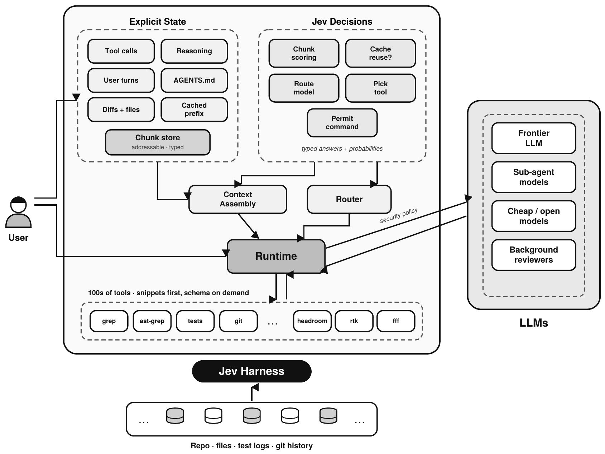
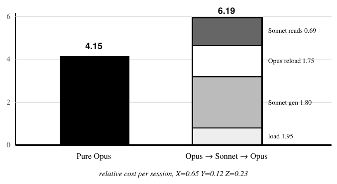
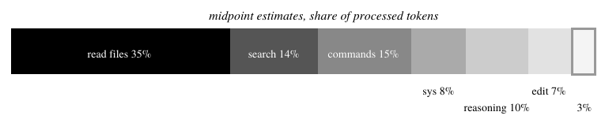
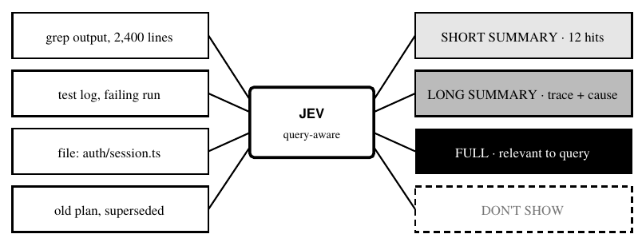
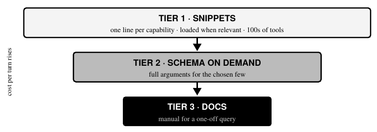
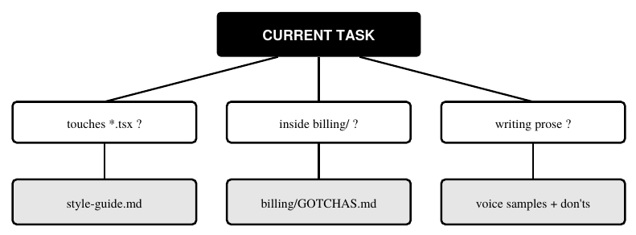
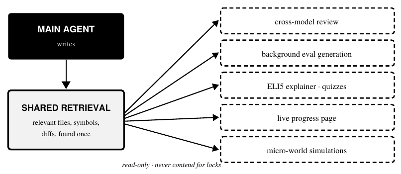

Jev Engineering for Coding Agents：上下文该按每一轮组装，而不是一路堆积
这份 12 页的 PDF 把 TypeSafe 创始人 Diogo Almeida 的设计笔记整理成文。它的判断是：coding agent 本身很简单，通常就是一个模型加几样工具的 while 循环；真正的杠杆在每一轮喂给模型什么。它从一个问题出发：如果语言模型没有 KV cache，你会怎么设计 coding agent？这个问题暴露出现有 agent 不加审视就继承的六个设计选择。随后它提出一种替代架构：状态显式、带类型，由 Jev 做每一轮的决策。每块上下文按当前问题打分，路由价格把重新处理的成本算进去，工具分层披露，指令按条件加载，只读的后台任务共享一次检索。它还算了路由的账、真实会话里 token 花在哪，以及为什么路由要看文件敏感度，不能只看难度。
原始 PDF（GitHub） 旺旺的 X 帖 底稿：公开的设计笔记（Google Docs） 精读版（加密，全文对照） 全文讲解约 35 分钟
PDF 给的索引词：Jev、TypeSafe、coding agents、harness engineering、KV cache、context engineering、model routing、sub-agents、tool calling、compaction、AGENTS.md、background agents。
旺旺：Coding Agent 最费 Token 的地方可能不是写代码，上下文应该按任务组装
补充：这一节只讲旺旺帖子里说了什么。帖子是他读这份 PDF 后的摘要；下面各节只讲 PDF 本身怎么说。
Coding Agent 最浪费 Token 的地方，可能根本不是写代码。
旺旺 @TiagerBao · X 帖首句
讲解：开篇他就说，Coding Agent 花 Token 最多的地方可能并不在写代码上。他用的是「可能」，不是定论。
他说自己最近读了一份《Jev Engineering for Coding Agents》，内容是整理 TypeSafe 创始人 Diogo Almeida 对 Agent 架构的思考，并挑出几个他认为值得关注的观点：
- 写代码只占约 4%～10% 的 Token，更多消耗在读取、搜索和命令输出上。
- 小模型不一定省钱：换模型之后要重建上下文，这一步可能更贵。
- MCP 工具不该一次把全部 Schema 都加载进来。
- Compaction 不该盲目压缩，而应按当前任务去取上下文。
- AGENTS.md 应按条件加载，免得无关规则长期占着上下文。
- 子 Agent 应共享检索结果，少做重复读取。
他的核心概括：上下文应该按任务动态组装，而不是让聊天记录无限累积。
他也给了定性：这是一份第三方汇编的设计笔记，不是已经落地的完整方案，但很值得做 Agent 的开发者参考。
帖子附了原文 PDF 的链接，最后问读者：Coding Agent 下一阶段最大的优化空间，是模型能力，还是上下文管理和任务调度？
补充 · 帖子各条和 PDF 的对应（我们核对的结果）
4%～10%：PDF 原表 3 写的是 Writing and editing code 一行 4–10%，表头是 ~Share，口径是「按子任务分的已处理 token 占比，偏输入的视角，重复读取每次都算」。PDF 文末说这张表是示意性估计，不是测量数据。底稿里它是一张标题为 SLOP 的表格截图，没有写数据怎么来的，来源未确认。
其余五条分别对应 PDF 第 II 节 A（路由）、第 VII 节（分层工具）、第 V 节（可见度阶梯）、第 VIII 节（条件指令）、第 X 节（后台任务共享检索）。PDF 摘要和第 X 节讲的是「只读的后台任务共享一次检索」，帖子写成了「子 Agent」。
这是一份独立汇编的学习笔记，底稿是 Diogo Almeida 的设计笔记，与 TypeSafe 无隶属
首页页眉写着这是 2026 年 9 月的一份「Jev 工程实践工作笔记」。主标题 JEV ENGINEERING FOR CODING AGENTS，副标题说它是 TypeSafe 创始人用 Jev 做东西的蓝图。署名一行说它是一份 A Synthesis for Study（供学习的综合整理），依据 Diogo Almeida（TypeSafe）的设计笔记。下面一行斜体：2026 年 9 月独立汇编，与 TypeSafe 无隶属，也未获其背书。
文末 Sources 一节把来源分得很清楚：
- Jev 的描述来自 TypeSafe 的材料：一个返回带类型的 choice、score 和 noul 决策、并附概率的决策模型。
- 核心论点、路由算术、六个症状和提出的功能，来自 TypeSafe 创始人 Diogo Almeida 的设计笔记，原话说这些笔记是「提供给汇编者的」。
- 读和搜的占比数字（56.2% of tool-use turns，46.5% of main-agent tokens，GPT-5.4 轨迹）引自 Microsoft 的 fastcontext 项目。
- token 占比那张表（原表 3）是对 CLI coding-agent 会话的 illustrative estimate，示意性估计。
- Recursive language models 出自 A. Zhang, 2025；工具出处是 headroom、rtk、ast-grep、ast-outline、fastcontext、fff（GitHub）。
- 模型标价沿用笔记里的数字，可能已经变了。所有示意图都是汇编者原创。
最后一页页脚再声明一次：这是供学习的独立整理，不是 TypeSafe、Anthropic、OpenAI、Microsoft 或文中任何项目的出版物，与它们都无隶属、未获背书；成本数字是示意，依据底稿里引用的标价。
补充 · 我们核实了什么
TypeSafe 与 Jev：TypeSafe 官网博客 2026-09-15 的发布文由 Diogo Almeida（founder, TypeSafe）署名，介绍 Jev 是返回带类型、带概率决策的模型（TypeSafe 博客）。
底稿：Latent Space 的 Jev 访谈页写「Diogo has published a note on the Tyranny of the KV Cache」，链接到一份公开的 Google Docs「[public] thoughts on a typesafe coding agent」（Latent Space 节目页）。我们导出了这份文档，结构和 PDF 对得上：六个「weird things」、路由算术、附录里的 fastcontext 数字和 SLOP 表都在。文档本身的所有者我们没法直接核实，归属依据是 Latent Space 的指认。
汇编者：PDF 没有署名。PDF 由 WeasyPrint 生成，放在 GitHub 仓库 yibie/jev-engineering-zh 里，该仓库 2026-09-22 建立，是它的中文全译；汇编者是不是仓库作者，未确认。仓库 README 称根目录是「第三方根据笔记汇编整理」，与帖子所说「第三方汇编」一致。本页讲解以英文 PDF 为准，中文译本只作参考。
fastcontext：PDF 写的 Microsoft fastcontext 项目，github.com/microsoft/fastcontext 今天访问返回 404，56.2% 和 46.5% 两个数字未确认，这里只转述 PDF 怎么说。
agent 只是一个循环，杠杆不在循环里，在每一轮喂给模型的东西里

原图注：Jev harness。显式状态（左）存成可寻址、带类型的块；Jev（右）回答每一轮的问题：显示哪些块、是否复用缓存、用哪个模型和工具、一条命令能否执行。Context Assembly 和 Router 驱动 Runtime；Runtime 调用几百个先给片段再披露的工具，在安全策略下把工作派给前沿、子 agent、便宜或后台模型。
摘要先下判断：coding agent 简单得出人意料，大多是一个模型加少量工具的 while 循环，模型之外几乎没有有意义的创新。这份笔记综合 Diogo Almeida 的设计笔记，讲怎样围绕 Jev 构建 coding agent。Jev 是 TypeSafe 的决策模型，把结构化状态转成带类型的输出，比如 choice、score 和 noul 决策。
补充：PDF 没有解释 noul 这个词。按 TypeSafe 的公开介绍，它是 Jev 三种问题类型之一，用 0 到 1 的概率回答一个陈述是否成立，相当于带概率的「是/否」。
摘要接着说，笔记从一个挑衅性的问题开始：如果语言模型没有 KV cache，你会怎么设计 coding agent？这个问题暴露出六个被不加审视就继承的设计选择：会亏钱的路由、挤占上下文的工具调用、盲目压缩的 compaction、几乎不触发的子 agent、丢掉状态的重启，以及电池之争（batteries debate，要不要内置大量能力）。
有些能力只能原生构建，因为它们要控制每一轮的上下文怎么组装
笔记以四个工作假设开场：
- coding agent 很简单，尤其是 agent 那部分：一个循环、一个模型、几样工具。
- 现有 agent 最好的部分可以复用：前沿模型都能通过 API 拿到，开源项目提供灵感，甚至 UI 组件；只有少数领域真有复杂度，比如 MCP 服务器的认证。
- 第一方 agent 的成本优势可能在缩小，因为用量正从打包订阅转向按量付费的 API 计价。
- 最重要的一条：有些能力只能原生构建。它们没法做成别人 agent 的插件，因为它们需要控制每一轮上下文怎么组装。
第四条就是全文论点。如果 agent 只是一个循环，杠杆就不在循环里，而在循环每转一次喂给模型的东西里。
Jev 站在哪里：Jev 不是写代码的模型，它是旁边那层决策层。harness 把当前应用状态（目标、上下文、规则、可用动作、之前的动作）连同一个预先定义的问题交给 Jev，Jev 返回一个带类型的答案：一个 choice、一个 score 或一个 noul 决策，每个都带概率。真正干活的是前沿模型、子 agent、工具和确定性代码。因为输出带类型、不是自由文本，harness 可以验证它、设阈值、按它分支，不用去解析一段话。
笔记里每个原生功能，底层都是在一个高频决策点上问 Jev 一个问题：下一轮该看哪些块？这个子任务能不能离开前沿模型？哪个工具对得上这个意图？这条命令该不该跑？每个会话要问上千次，笔记认为杠杆就在这些小决策里。
| Decision point | Question to Jev | Typed answer |
|---|---|---|
| Context | How visible should this chunk be for this query? | choice: hide / short / long / full |
| Cache | Reuse the cached prefix or rebuild? | noul + probability |
| Routing | Can this subtask leave the frontier model? | choice + cost estimate |
| Tools | Which tool fits this intent? | ranked choice, top-k |
| Permissions | Should this command run? | allow / ask / deny |
| Security | Which files will this task touch? | sensitivity score |
怎么读原表 1：六个决策点各对应一个问 Jev 的问题和一种答案类型。上下文问「这块对这次查询该有多可见」，答案是在隐藏、短、长、全文四档里选一档；缓存问「复用缓存前缀还是重建」，答案是 noul 加概率；路由问「这个子任务能否离开前沿模型」，答案是 choice 加成本估计；工具问「哪个工具合这个意图」，答案是排好序的 top-k；权限问「这条命令该不该跑」，答案是允许、先问、拒绝三选一；安全问「这个任务会碰哪些文件」，答案是敏感度分数。
KV cache 让 agent 只能追加记录；把它拿掉，就看清「交给便宜模型」为什么会亏
笔记说作者爱问其他工程师一个问题：如果 LLM 没有 KV cache，你会怎么设计 coding agent？KV cache 正是 agent 被做成只追加的对话记录（append-only transcripts）的原因：复用缓存前缀很便宜，改动上下文靠前的任何东西都会让缓存失效，模型得把改动之后的一切重新处理一遍。这一条经济事实塑造了现有 agent 的几乎每个设计决定，而且通常没人把它说出来。
想象把缓存拿掉有两个作用。一是允许一种为 Jev 设计、状态显式的架构，上下文是被组装的，不是被累积的。二是揭示为什么直觉上对的想法，比如把简单的活交给便宜模型，实际会失败。笔记管这叫 the tyranny of the KV cache（KV cache 的暴政）。
| Symptom | Why it exists | What it costs |
|---|---|---|
| 1. Routing fails | Handing back to the large model reprocesses context | Mixed routes cost more than pure frontier |
| 2. Tools crowd context | Schemas must sit in the system message | Tokens spent on irrelevant tools; weaker selection |
| 3. Compaction | One shared state assumed for all future turns | Query-blind compression loses what matters later |
| 4. Sub-agents are rare | Choosing what context to pass in and merge back is hard | Little automatic parallelism |
| 5. Restarts | Stateful transcripts corrupt over time | Relevant old state discarded with the bad |
| 6. Batteries debate | Every built-in costs permanent context | Forced choice between ease and power |
怎么读原表 2：PDF 给六个症状编了号 1 到 6，每行写症状、它为什么存在、代价是什么。1 路由失败，因为交回大模型时要重新处理上下文，混合路线比一直用前沿模型更贵；2 工具挤占上下文，因为 schema 必须放在 system message 里，token 花在无关工具上，选择也更差；3 compaction 假设以后每一轮都要同一份共享状态，不看问题的压缩会丢掉之后要用的东西；4 子 agent 少见，因为挑选传进去和合并回来的上下文很难，自动并行就少；5 重启，因为有状态的记录会随时间变坏，有用的旧状态跟坏的一起扔掉；6 电池之争，因为每个内置能力都永久占上下文，只能在易用和强大之间二选一。
A. 路由不工作：先算账
直觉方案是让前沿模型做计划，把执行交给便宜模型，再请前沿模型回来审。笔记用标价算账：Opus 每百万 token 输入 $5、输出 $25，Sonnet 是 $3 和 $15。设 X 为上下文 token，Y 为生成的输出 token，Z 为干活时额外读进来的 token，比如命令输出和读文件。
Path 1 pure Opus
generate 25·Y
read 5·Z
total 25Y + 5Z
Path 2 Opus → Sonnet → Opus
Sonnet loads context 3·X
Sonnet generates 15·Y
Sonnet reads 3·Z
Opus reloads what changed 5·(Y+Z)
total 3X + 20Y + 8Z怎么读原代码 1：路径 1 一直用 Opus，成本是生成 25·Y 加读取 5·Z。路径 2 先交给 Sonnet：Sonnet 要先把上下文载入（3·X），再生成（15·Y）、读取（3·Z）；回到 Opus 时，Opus 要把变化的部分重新载入（5·(Y+Z)）。合计 3X + 20Y + 8Z。多出来的是来回两次「载入上下文」。
笔记的结论：会话长（X 大）、或者活儿读得远比写得多、或者两者兼有时，路径 2 都更贵。代入一个看似合理的会话比例 X = 0.65、Y = 0.12、Z = 0.23，一直用 Opus 是 4.15，绕一圈是 6.19。留在前沿模型上的花费，大约只有那条本想省钱路线的三分之二。

原图注：路由陷阱。把执行派给便宜模型，下去时多一次上下文载入，回来时多一次重新处理，两者加起来超过了每 token 的折扣。
教训不是路由错了，是「按 token 定价」的路由错了，应该按「重建一次上下文」定价。只有当 harness 能给便宜模型一份小而专门的上下文、不交出整份记录，并且回程不逼前沿模型把帮手产出的一切重读一遍时，路由才可行。
工具、compaction、子 agent、重启和电池之争，都是同一个缓存约束的副作用
B. 工具调用是个怪取舍
工具必须在 system message 里预先声明，连同完整的参数 schema，不管跟当前这一轮有没有关系。这占掉一大块上下文，而且按笔记的判断，并没换来特别聪明的工具选择。笔记的工作假设是：模型难以应付两件事的某种组合，一是 high cardinality（一次面对很多工具），二是 off-policy tool calling（工具用法跟模型训练时见过的不一样）。这可能是 skills 为什么往往比原始工具列表和 MCP 服务器表现更好的部分原因：skills 先只载入一句简短描述，细节往后放。
C. compaction 的存在
如果以后每一轮都要同一份共享状态，compaction 完全说得通。笔记质疑的正是这个假设。compaction 做的是通用压缩，又难又有损。按查询压缩容易得多：知道下一个问题是什么，就知道该留什么。在问题出现之前写好的摘要，必然会扔掉这个问题需要的某样东西。
D. 子 agent 差点意思
模型并行得比人们预期的少。笔记怀疑原因在状态管理：要决定把父上下文的哪些部分传进去，又把每个子 agent 发现的哪些部分合并回来。这个决定又贵又容易出错时，模型就干脆不做。
E. 重启的存在
会话跑偏或记录坏掉时，标准办法是重启，坏状态和好状态一起扔。状态可寻址以后，另一种做法是干净地重新开始，再按需只把仍然相关的旧块载回来。
F. 电池不含在内
agent 该不该自带内置能力，一直有争论。眼下这是易用和强大之间的取舍：一头是「电池」装得很满的 agent，另一头是 Claude Code 和 Codex 这类给熟练用户的工具。取舍之所以存在，是因为每一块「电池」都永久占上下文。把这份成本去掉，争论自然消失。
读文件和搜代码占大头，写代码是最小的几项之一
改 harness 之前，先弄清会话里哪一部分在花预算。下表估计了一次典型 CLI coding-agent 会话里，各子任务占全部已处理 token 的比例。这是偏输入的视角，所以重复读取每次都算。
| Subtask | ~Share | Note |
|---|---|---|
| Reading file contents | 30–40% | Largest bucket; files reread as context |
| Searching the codebase | 10–18% | grep, glob, listings; noisy output |
| Command output | 10–20% | Stack traces and logs balloon on failure |
| System prompt, tool schemas, AGENTS.md | 5–12% | Fixed overhead paid on every turn |
| Conversation replay | amplifier | Why everything above is counted repeatedly |
| Reasoning and planning | 5–15% | Higher on hard debugging |
| Writing and editing code | 4–10% | Diffs and str_replace edits are compact |
| Explaining to the user | 2–5% | Terse by design in CLI agents |
怎么读原表 3：读文件内容 30–40%，是最大的一桶，因为文件会被当作上下文反复读；搜代码库 10–18%，grep、glob、目录列表的输出很吵；命令输出 10–20%，失败时调用栈和日志会暴涨；system prompt、工具 schema 和 AGENTS.md 5–12%，每一轮都要付的固定开销；对话回放不是单独一项，是「放大器」，它让上面每一项被重复计数；推理和计划 5–15%，难调的 bug 上更高；写和改代码 4–10%，diff 和 str_replace 编辑很紧凑；向用户解释 2–5%，CLI agent 本来就写得简短。表头的「~」表示约数，PDF 文末说这张表是示意性估计。
笔记说最醒目的是靠下那一行：写代码明明是 coding agent 存在的理由，却是最小的几项之一；读和搜占了主导。它引独立分析佐证：Microsoft 的 fastcontext 项目报告，在 GPT-5.4 的轨迹里，读和搜占全部工具调用轮次的 56.2%，占主 agent 总 token 的 46.5%。如果这能推广，coding agent 最大的效率提升就不是更好的模型或更好的 diff 格式，而是更聪明的检索。

原图注：检索占主导。读、搜和命令输出加起来大约占已处理 token 的三分之二；写代码不到十分之一。
两项基础改进任何 agent 都能接：可编程的权限，和由 harness 代选工具
笔记先给两项改进，任何现有 agent 都能接，原生不原生都行。第一项是可编程权限：agent 跑的每条命令都带出一个问题，它到底该不该跑。Claude 的 auto mode 用一个分类器回答。笔记主张更进一步：把权限写成对「允许什么、不允许什么」的可编程查询，在值得的地方做更深的检查，比如执行一个 Python 或 shell 文件前先读它的内容，而不是只批准命令名。
policy "exec":
deny if command touches ~/.ssh or .env*
deny if script contents contain network
egress
and task.scope != "deploy"
ask if command writes outside repo root
allow if command in read_only_set
allow if tests/ and exit code is expected怎么读原代码 2：命令碰到 ~/.ssh 或 .env* 就拒绝；脚本内容里有网络外发、而且任务范围不是 deploy，也拒绝；命令要写仓库根目录以外的地方，先问人；命令在只读集合里就放行；在 tests/ 下且退出码符合预期，也放行。第二条看的是脚本内容，不是命令名，这就是上面说的「更深的检查」。
补充：原 PDF 里「egress」单独折到下一行、顶格排，像是排版时长行被折断；这里按 PDF 显示的样子原样保留，没有替它合并。
第二项是让 harness 当工具路由器。不把每个工具的 schema 都摆给模型，而是让 harness 站在「意图」和「调用」之间：模型用大白话说它想干什么，harness 用一串带类型的 Jev 调用挑出最合适的那一个工具，或前几个候选，并替它构造参数。模型不必在上下文里装着几百个 schema，参数类型写错会变成一个校验错误，而不是一次悄无声息的失败。
每个查询都重新决定上下文：同一块内容，这次看全文，下次可以不看
核心提议是去掉「上下文是静态的」这个想法。对每个用户查询，harness 问 Jev 两件事。第一，之前的上下文有多好：复用现有 KV cache 是对的，还是从头重建会更便宜、更好；这被当作一个明确、算过成本的决定，不是默认行为。第二，怎么构造一份新上下文，相关的全都在，别的一样不要。
最简单的形式，是对每一块上下文做一次 noul：每个工具调用的输入、每个工具调用的输出、每段内部推理，可能还有每次和用户的往来。后一个版本把分数换成一个可见度等级。

原图注：可见度阶梯。同一块内容可以隐藏、简短摘要、详细摘要或全文显示，取决于当前查询。这就是按查询压缩，compaction 缺的正是这一点。
好处是 compaction 背后的想法保留下来，它的主要缺陷没了。compaction 在知道问题之前压一次；阶梯在知道问题之后，每个查询压一次。一份 2,400 行的 grep 结果，对一个问题是十二处相关命中，对下一个问题可以完全不可见，而它从来没有从状态里删掉。
笔记还提了一个视觉上的点子：如果 harness 能对 grep 输出画热力图，标出哪部分相关，就能按预算允许的任意程度把输出过滤下来。笔记说，这样看起来也会很酷。
能为子任务造一份小上下文之后，路由重新划算，子 agent 也能常用
一等公民的动态上下文让路由重新成立。harness 一旦能为子任务建一份小而相关的上下文，把子任务交给更便宜或更快的模型，就不再需要它载入整个会话；结果也能作为一个打过分的块合并回来，而不是一份前沿模型必须重读的记录。一切都同时顾及成本和智能。
同一机制也解开了子 agent。笔记猜测，今天子 agent 的成本里，很大一块花在决定传什么上下文上，而不是花在用户会随手打的那种简单指令上。如果构建这份上下文变得便宜、自动，子 agent 就能用得多得多。它还带来一个给用户的开关：多花钱换更快或更好的结果，或者保守运行、尽量少花。
A. 极端并行
派一个任务如果变便宜，就会有很多任务同时跑，harness 也就继承了并发系统的问题：同步原语、agent 之间的通信，以及几个 agent 共享状态时的写冲突。笔记建议用带锁的共享状态。让这件事可控的，是把「读」和「写」明确区分成不同类型，因为只读任务之间永远不会争抢。
B. 给目标去重
对 /goal 这类目标驱动的循环，有个悬而未决的问题：agent 会不会重复干活。一种缓解办法：派出任何子任务之前，先把它登记为一个子目标，和之前所有子目标去重。已经做完或正在做的工作，永远不会被启动第二次。
工具分三层披露：先给一行片段，选中才给 schema，一次性查询才给文档
笔记主张在今天「始终加载的工具」和「按需加载的 skills」之间加一层。模型没法提出一个它不知道存在的动作，所以它需要简短的片段说明有什么可用，类似 skill 的描述。但这些片段不必放在 system message 里，可以在相关时动态载入。片段背后，是需要时把可用动作的完整 schema 倒出来的能力，类似一个 tool-search 工具。把这些串起来的要求是：用完之后，这些东西都不能污染上下文。

原图注：分层披露。模型看到的是一张关于一切的廉价地图，只为它选中的东西付细节的钱，用完就把细节从上下文里拿掉。
如果这行得通，第 II 节的电池之争就消失了：一个内置能力在被用到之前几乎不花钱，agent 就能自带几百个工具和几千页文档。笔记还指出第二个好处：接近零成本的集成是很强的联合营销渠道，也让东西直接能用。
更好的电池：很多社区工具声称能帮 agent，实际并不能。笔记以一个工具输出压缩器为例，猜测原因是模型并不天然理解这些工具。原生 harness 可以自带第一方提示，教模型怎么用每一个工具，相当于每个工具配一个内置的子 agent 或 skill；它的干净上下文也让工具的自定义逻辑不会毒害会话的其余部分。这里也有营销角度：给眼下流行的工具做集成，能让 agent 一直被人谈论。
AGENTS.md 按条件分段加载，条件成立就重新载入，不怕被 compaction 压掉
今天 AGENTS.md 是整份加载的。笔记提议分段按条件加载：写前端代码时载入风格指南；在某个子目录里干活时，载入那个目录的 footguns 文件（容易踩的坑），笔记还建议每个子目录都该有一份。

原图注：条件化的 AGENTS.md。指令挂在条件上而不是挂在会话上；条件片段被钉住，compaction 没法把它摘要掉。
这像 skills，但笔记分了一下：skills 的意思往往是「现在就做这个」，条件指令的意思是「把这个记在某处」。后一种还需要 skills 没有的性质：不受 compaction 影响。长会话早期载入的 skill 迟早会被压缩或摘要掉；绑定条件的指令，只要条件成立就会重新载入。
笔记说普通聊天里也有同样的需要：要摘要时，应带上偏好的格式；要按自己的文风写东西时，应带上样本和一份要避免的清单；要代码时，应带上风格指南，以及一句「别加一百万个断言」。
结构化 skills：看 harness 能做到多可编程，skills 可以带的不只是指令，还有行为改变，类似 Claude Code 的 skill hooks，但更强。笔记指出现有 hook 系统的一个局限：hook 一旦加上，就永久留在会话里。结构化 skills 会随着触发它的条件挂上、卸下行为。
递归语言模型：相关的一个方向是 recursive language model 的做法，把 agent 更多的状态当作显式变量，而不是记录里的文字。状态存在有名字的变量里，可能比「状态就是碰巧还留在上下文窗口里的东西」干净得多。
路由除了难度和成本还要看信任：按任务会碰的文件决定能用哪些模型
今天的路由围绕难度和成本。笔记加了第三个维度：信任。一些通过低价服务商提供的开放权重模型比前沿 API 便宜得多，笔记担心经过其中某些端点的数据可能不会保持私密。提议是给每个子任务估计它可能碰到哪些类型的文件，给文件类型挂策略，再据此路由子任务。
| Files likely touched | Policy | Eligible models |
|---|---|---|
| Public docs, open-source deps | open | any, cheapest first |
| Application code | standard | vetted providers |
| Secrets, env, infra config | restricted | first-party frontier only |
| Proprietary research code | custom | excludes named vendors |
怎么读原表 4：公开文档和开源依赖，策略 open，任何模型都行，便宜的优先；应用代码，策略 standard，用审核过的服务商；密钥、环境变量、基础设施配置，策略 restricted，只用第一方前沿模型；专有研究代码，策略 custom，排除点名的厂商。
最后一行反映笔记里一个更大的观点：难度和成本不是路由的唯一理由。团队可能为了自己的模型研究避开某家厂商的模型，或者在安全敏感的工作上避开某些服务商。路由由策略驱动之后，这些偏好就成了配置，而不靠人自觉。
只读的后台任务共用一次检索，跑多少个都便宜
笔记观察到几个流行 agent 工作流里正在出现一种模式：
- 一边干活一边并行更新的 HTML 页面；
- 「理解而不是生成才是新瓶颈」这一论点；
- 在后台生成 evals，也就是评测用例；
- 一个 ELI5 skill，用几张大图和很少的字解释一个系统；
- 让 agent 维护一个小小的、已部署的进度页，带截图和笔记，长任务跑着时能用手机查看。
还有一个相关的生产做法：把线上流量镜像给候选模型，在切换之前自动生成大约一天的 evals。
它们的共同点：都在后台跑，是正常编码工作流的延伸，而且都是当前代码库状态的只读函数。跨模型审阅，比如让一家厂商的 agent 审另一家的活，也属于同一类。

原图注：显式状态上的后台处理。找出与一次改动相关内容这件贵活只做一次，由每个只读后台任务共享。
笔记说 Jev 论点在这里兑现。以 Jev 为中心的 harness 必须精确知道上下文里有什么、每个操作是读还是写。找出与一次代码改动相关的信息不是小活。如果这次检索被所有后台任务共享，而不是每个各做一遍，跑它们就便宜得多，跑更多个也划算。既然第 III 节发现检索占了 token 预算的主导，共享它就是能拿到的最大一笔单项节省。用笔记的话说，把读和写分清楚，迟早会给 agent 超能力。
这些都不需要更好的模型，需要把上下文窗口当成有意组装的东西
笔记最后列了几个可以原生集成的开源项目，每个都附一句设计说明：以 Jev 为中心的 harness 会怎么用它。
| Project | Role | Native angle |
|---|---|---|
| headroom | context compressor | classifier checks the compression kept the needed facts |
| rtk | tool-output compressor | first-party prompts so the model understands it |
| ast-grep | structural search | load manual once, generate N queries, filter by relevance |
| ast-outline | structural outline | hierarchical calling: pick the subtree to inspect |
| fastcontext | repo-exploration sub-agent | route to it, or replace its search with structure |
| fff | path and content search | in-memory index, frequency-ranked, faster than ripgrep in long sessions |
怎么读原表 5：headroom 是上下文压缩器，原生做法是用分类器检查压缩后是否留住了需要的事实；rtk 是工具输出压缩器，配第一方提示让模型理解它；ast-grep 做结构化搜索，手册载入一次、生成 N 条查询、再按相关性过滤；ast-outline 给结构化大纲，用于分层调用，挑要看的子树；fastcontext 是探索仓库的子 agent，可以路由给它，或用结构替换它的搜索；fff 做路径和内容搜索，内存索引、按频率排序，在长会话里比 ripgrep 快。
结论：这份设计笔记的论点说起来容易，做起来难。coding agent 是简单的循环，杠杆不在循环里，而在 harness 每一轮摆在模型面前的东西里；今天这个决定是默认做出的，由一份围绕 KV cache 经济学成形的、只追加的记录来做。
把缓存当思想实验拿掉，六种熟悉的行为就不一样了。路由失败，是因为上下文要重新处理，不是因为便宜模型弱。工具挤满窗口，是因为必须预先声明。compaction 丢信息，是因为它在知道问题之前就压缩。子 agent 少见，是因为传状态难。重启把好状态和坏状态一起扔。电池之争只因为每个内置能力永远占上下文才存在。
提出的 harness 用一个动作处理全部六个：让状态显式、带类型，让 Jev 按每个查询决定上下文、路由、工具和权限。块在可见度阶梯上打分；路由按重建一次上下文定价；工具分层披露；指令挂在条件上；后台任务共享一次检索。
None of this requires a better model.
Jev Engineering for Coding Agents · XII. Conclusion
讲解：这些都不需要更好的模型，需要的是把上下文窗口当成有意组装的东西，而不是意外堆积起来的东西。
补充 · 读这份 PDF 时要记住的几处
它是一份设计构想，不是实现报告：PDF 没有给任何已实现系统的测试结果。路由算术里的 X、Y、Z 比例，原文自己的说法是「一个看似合理的会话比例」；原表 3 是示意性估计；成本数字依据可能已变的标价。帖子说「不是已经落地的完整方案」，和这一点一致。
三道题，专打容易混的地方
补充：答错只标你选的那一项，不揭晓答案；回看对应小节再试。